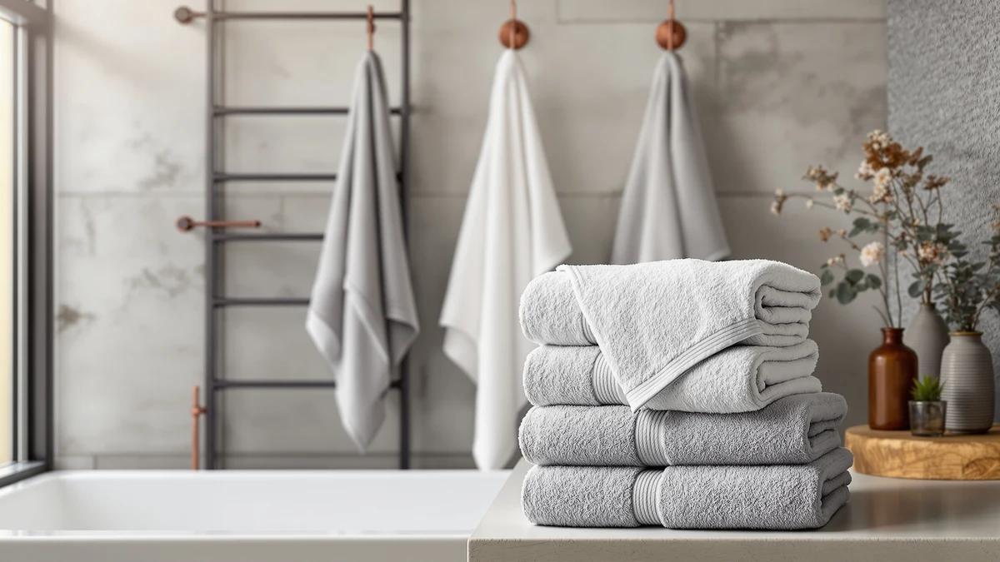

Best Bath Towels to Buy (2026)
Prices and picks verified as of September 2026. Independent, reader-supported reviews.


Quick Answer
The Luxury White Bath Towel Set is our pick for the best bath towels to buy if you want a matching, hotel-style eight-piece set that works in any bathroom. If you want a specific fabric or size instead, from a budget Utopia bundle to a quick-drying NALIVO microfiber towel, the six other sets below cover the rest of the range.
Our pick: Luxury White Bath Towel Set, $39.99 Check Price on Amazon
Bottom line: our top pick is the Luxury White Bath Towel Set of 8 Pieces - 100% Turkish Cotton at $39.99. The best budget option is the Utopia Towels 8 Piece Luxury Towel Set at $27.99.
Things to Know Before You Buy
- Piece count is not the same as towel count. An "8 piece" or "6 piece" set like the Luxury White Bath Towel Set or American Soft Linen Luxury 6 usually mixes bath towels, hand towels, and washcloths, not eight full bath towels.
- 100% cotton and microfiber absorb water differently. Cotton towels like the ones from Utopia and American Soft Linen feel heavier and plusher, while a microfiber pick like the NALIVO dries faster between uses.
- Turkish cotton gets softer with washing, not thinner. The long-staple fibers in a set like Cotton Paradise's Turkish cotton towels are built to improve over repeated washes, unlike lower-grade cotton blends.
- Thinner towels dry faster but feel less plush. Tens Towels trades weight for speed, which matters more for travel and gym bags than for an everyday bathroom towel.
- White towels show wear faster than colored ones. Stains and gray tinting from mixed laundry loads show up sooner on an all-white set, so wash it separately if you want it to stay bright.
Finding the best bath towels to buy usually starts with a wall of near-identical white and gray packages online, each one claiming to be softer, more absorbent, or more "luxury" than the last. The material and piece count buried in the fine print matter more than the marketing copy, and that's easy to miss when every listing photo looks the same. We compared seven sets and single towels across cotton, Turkish cotton, and microfiber to figure out which ones actually deliver on their claims.
Price alone doesn't separate a good set from a mediocre one. The $27.99 Utopia Towels 8 Piece Luxury and the $55.98 NALIVO Extra Large Bath Towel sit at opposite ends of this comparison, and neither is automatically the better buy. What matters more is matching the material and size to how you actually use towels, whether that's a shared family bathroom that needs a full matching set or a gym bag that needs something thin and quick-drying.
Our pick for most people is the Luxury White Bath Towel Set. The eight-piece 100% cotton set covers bath towels, hand towels, and washcloths for $39.99, and its plain white design won't clash with a bathroom you've already decorated. If you want a different fabric, size, or price point, the six other sets below cover the rest of the range, from Cotton Paradise's Turkish cotton to Tens Towels' quick-drying pack of four. For more on how fiber and weave affect a towel's feel, see our bath towel buying guide.
Why You Should Trust Us
I'm Ilane Tall, and I write about bath and home textiles for Best Bath Towels. Towel shopping looks simple until you're comparing a dozen near-identical white sets, so I focus on the details that actually separate one from another: fiber, piece count, and how a set holds up according to the people who bought it.
For this guide to the best bath towels to buy, I didn't accept free samples or sponsored placements from any brand listed here. I priced every product using its Amazon listing at the time of research and read through verified owner reviews on each one to check the specs against real household experience. Reviewers consistently flag the same strengths and weaknesses across dozens of purchases, and that pattern tells you more than any single towel could.
How We Picked
We started by pulling bath towels and towel sets that cover the range shoppers actually search for when looking for the best bath towels to buy: budget multi-packs, mid-range cotton sets, a Turkish cotton option, and a microfiber pick for anyone who prioritizes speed over plushness. From there, we filtered for brands with a track record across multiple towel lines, like Utopia Towels and American Soft Linen, rather than one-off listings with thin review histories.
We also weighed price per piece rather than sticker price alone. A $27.99 eight-piece set and a $55.98 single oversized towel serve different budgets and different needs, so we kept both ends of that range in this guide. We passed over listings with repeated sizing or shrinkage complaints that outnumbered the praise, and we prioritized sets with material claims that matched what verified reviewers actually reported.
How We Compared
We compared these seven picks for the best bath towels to buy using the material, size, and price listed on each Amazon listing, cross-checked against verified owner reviews for consistency. We don't run a physical testing lab, and we didn't wash, weigh, or time-dry any of these towels ourselves. Instead, we read through owner feedback looking for patterns: repeated complaints about shrinkage, thinning, or fading after a handful of washes, and repeated praise for softness or absorbency.
Where a brand makes a specific claim, like Cotton Paradise's Turkish cotton sourcing or NALIVO's oversized dimensions, we noted whether reviewers actually confirmed that benefit in practice rather than repeating the listing copy. Prices and specs reflect the listings as of August 2026, and prices change often enough that you should double-check the current price before buying.
Our Picks

Luxury White Bath Towel Set
What we like
- Eight-piece set covers bath towels, hand towels, and washcloths in one order
- 100% cotton construction absorbs water well
- Classic white design matches any bathroom color scheme
- At $39.99 for eight pieces, cost per piece stays reasonable
Flaws but not dealbreakers
- White towels show stains and discoloration faster than colored towels
- Reviewers recommend washing the set separately to avoid graying
| Material | 100% cotton |
| Size | 8 Pieces Towel Set |
The Luxury White Bath Towel Set leans on the same logic hotels have used for decades: white never clashes with existing tile, paint, or fixtures. Among the best bath towels to buy for a bathroom you're decorating around rather than building from scratch, that neutrality is the whole appeal. At $39.99, the eight-piece set includes bath towels, hand towels, and washcloths, covering a full bathroom's needs in a single order instead of piecing together separate purchases.
The 100% cotton construction absorbs water at a level consistent with the other cotton sets in this comparison, and owners report a soft, hotel-like feel straight out of the package. The tradeoff with any all-white set shows up over time: stains, minor discoloration, and gray tinting from mixed laundry loads appear faster on white than on a patterned or colored towel. Reviewers who wash the set on its own report the best results keeping that crisp look intact.

American Soft Linen Luxury 6
What we like
- Six-piece set covers bath towels, hand towels, and washcloths
- Ring-spun cotton feels soft against skin
- Available in a range of colors for easier bathroom coordination
- $35.99 splits into a reasonable per-piece cost across six items
Flaws but not dealbreakers
- Six-piece count includes washcloths and hand towels, not six full bath towels
- Reviewers note some shrinkage after the first few hot washes
| Material | 100% cotton |
| Size | 6 Pc Towel Set |
American Soft Linen built its name on ring-spun cotton that feels heavier and softer than typical budget towels, and this six-piece set brings that reputation to shoppers who want color options beyond basic white. At $35.99, the set bundles bath towels, hand towels, and washcloths in a shared color, which simplifies coordinating a bathroom compared with buying pieces separately.
Owners consistently describe the cotton as noticeably plush next to lower-priced sets, with absorbency that holds up for daily use. The color range gives it an edge over an all-white set if you want your towels to add color to the room instead of blending into it. The main caveat, repeated across several verified reviews, is mild shrinkage after the first couple of hot washes, so a cool or warm cycle preserves the sizing better.

Utopia Towels 8 Piece Luxury
What we like
- Eight pieces for $27.99 is the lowest total price in this comparison
- 100% cotton construction handles daily use well
- Full set includes bath towels, hand towels, and washcloths
Flaws but not dealbreakers
- Thinner fabric weight than the American Soft Linen or Cotton Paradise picks
- Fewer color options than some competing sets
| Material | 100% cotton |
| Size | 8 Pieces Towel Set |
Utopia Towels has built a following among people comparing the best bath towels to buy on price alone, and this 8 Piece Luxury set explains why. At $27.99 for eight pieces, it costs less than several single towels elsewhere in this comparison while still delivering a matched design across bath towels, hand towels, and washcloths.
The 100% cotton construction handles daily bathroom use without complaint, and reviewers who buy it for guest bathrooms or a first apartment report it holds up fine under regular washing. The fabric runs thinner than the American Soft Linen or Cotton Paradise picks here, which keeps the price down but means it won't feel as substantial in hand. For anyone furnishing a bathroom on a tight budget, it remains the best per-piece value in this lineup.

American Soft Linen Luxury 4
What we like
- Four 27x54 inch towels give full coverage without hand towels or washcloths to sort
- Ring-spun cotton feels plush and absorbs water well
- Fewer pieces means less to fold and store than an eight-piece set
- $35.99 for four full-size towels keeps the per-towel cost reasonable
Flaws but not dealbreakers
- No hand towels or washcloths included, unlike the six and eight-piece sets here
- Reviewers note shrinkage after hot washing, the same issue as the six-piece version
| Material | 100% cotton |
| Size | 27x54" Bath Towel Set |
This four-piece version of the American Soft Linen Luxury line trades the six-piece set's washcloths and hand towels for four larger, 27x54 inch bath towels instead. At $35.99, you get fewer total pieces but full-size coverage on every one of them, without paying for smaller pieces you may not need.
The ring-spun cotton carries the same soft hand as the six-piece set, and reviewers who prefer fewer, larger towels over a mixed matching set point to this option specifically. Like its six-piece sibling, it shows some shrinkage after repeated hot washing, so a cooler wash cycle helps the sizing hold. If your household goes through fewer towels but wants each one to be full-size, this four-piece split makes more sense than the six-piece bundle.

NALIVO Extra Large Bath Towel
What we like
- Oversized dimensions cover more of the body than a standard cotton towel
- Microfiber dries faster than cotton between uses
- Lightweight enough to pack easily for travel
Flaws but not dealbreakers
- At $55.98, it's the most expensive pick in this comparison
- Microfiber feels less plush than the cotton sets here
| Material | Microfiber |
| Size | 6Piece Towel Set |
NALIVO's Extra Large Bath Towel is the only microfiber pick among the best bath towels to buy in this comparison, and the material choice comes with a clear tradeoff: less plush than cotton, but noticeably faster to dry. At $55.98, it's also the most expensive option here, priced closer to a specialty towel than an everyday multi-pack.
The oversized dimensions give it more coverage than the standard cotton towels in this lineup, which reviewers cite as the main reason to choose it over a cheaper cotton set. Microfiber's quick-dry property also makes it a practical pick for travel or a gym bag, where a slow-drying cotton towel can stay damp inside a packed bag. The higher price and less plush feel are the honest costs of that speed, and buyers who prioritize cotton's softness over drying time are better served by the cotton picks above.

Cotton Paradise 100% Cotton Turkish
What we like
- Turkish cotton has a reputation for getting softer with each wash
- Dobby-woven border gives it a more finished, hotel-like look
- Six-piece set covers bath towels, hand towels, and washcloths
Flaws but not dealbreakers
- $39.99 costs more per piece than the Utopia or American Soft Linen four-piece sets
- The denser weave takes longer to dry than the thinner Tens Towels pick
| Material | 100% cotton |
| Size | 6 Piece Towel Set |
Cotton Paradise leans on Turkish cotton's reputation for getting softer with every wash rather than wearing thin, and this six-piece set adds a dobby-woven border that gives it a more finished, hotel-like look than the plainer sets in this comparison. At $39.99, it sits in the same price range as the Luxury White Bath Towel Set above, but the fiber and finish set it apart.
Reviewers consistently point to the softness improving over the first several washes, a trait specific to Turkish cotton's long-staple fibers rather than typical of cotton towels generally. The tradeoff is drying time: the denser weave that gives Turkish cotton its plush feel also means it takes longer to dry between uses than the thinner Tens Towels pick. For a bathroom where towels have room to air out between showers, that tradeoff rarely matters.

Tens Towels Pack of 4
What we like
- Thinner weave dries faster than the thicker cotton sets here
- 30 x 60 inch size gives full-body coverage despite the low weight
- Compact enough to pack for a gym bag or carry-on
- 100% cotton construction still absorbs water effectively
Flaws but not dealbreakers
- Thinner fabric feels less plush than the Cotton Paradise or American Soft Linen picks
- Reviewers say the low weight takes some adjustment if you're used to a heavier towel
| Material | 100% cotton |
| Size | 30 X 60 Inches |
Tens Towels built its reputation on being deliberately thinner than a typical bath towel, and this four-pack of 30 x 60 inch towels is the fastest-drying, most packable pick among the best bath towels to buy in this comparison. At $35.99 for four towels, the low weight is the entire point rather than a compromise.
Reviewers who travel frequently or hit the gym regularly single out how quickly these towels dry on a hook or inside a bag, avoiding the musty smell that a damp, heavier cotton towel can develop when packed away. The 100% cotton construction still absorbs water effectively despite the reduced weight, though anyone used to a dense, plush towel will notice the difference in hand. For anyone who values fast drying and portability over plushness, it's a straightforward tradeoff.
Quick Comparison
Here's how all seven of the best bath towels to buy in this guide stack up on material, price, and what each one is best suited for.
| Product | Material | Price | Rating | Best for | Get it |
|---|---|---|---|---|---|
| Luxury White Bath Towel Set | 100% cotton | $39.99 | 4 | Hotel-style matching set | View on Amazon → |
| American Soft Linen Luxury 6 | 100% cotton | $35.99 | 4 | Color-coordinated six-piece set | View on Amazon → |
| Utopia Towels 8 Piece Luxury | 100% cotton | $27.99 | 4 | Lowest cost per piece | View on Amazon → |
| American Soft Linen Luxury 4 | 100% cotton | $35.99 | 4 | Full-size, four-piece set | View on Amazon → |
| NALIVO Extra Large Bath Towel | Microfiber | $55.98 | 4 | Oversized, quick-dry pick | View on Amazon → |
| Cotton Paradise 100% Cotton Turkish | 100% cotton | $39.99 | 4 | Turkish-cotton softness | View on Amazon → |
| Tens Towels Pack of 4 | 100% cotton | $35.99 | 4 | Fastest drying, most packable | View on Amazon → |
What's the difference between a bath towel and a bath sheet?
A standard bath towel usually measures around 27 x 54 inches, while an oversized towel or bath sheet like the NALIVO pick in this comparison runs larger for more coverage.
Is 100% cotton or microfiber better for a bath towel?
100% cotton, used in most of the picks in this comparison, absorbs water more thoroughly and feels plusher against skin, which is why it's the default choice for everyday home use.
The Competition
We looked at plenty of bath towels that didn't make this list. Several ultra-cheap ten-packs priced under $20 use thin, low-weight cotton blends that read as a bargain until you calculate the price per towel against how quickly reviewers report them thinning out, at which point a sturdier set like the Utopia Towels picks above becomes the better long-term value.
We also passed on a handful of bamboo-viscose towels marketed as an eco-friendly upgrade. The material feels soft initially, but several listings had thinner review histories and more inconsistent durability feedback than the established cotton and Turkish cotton brands in this guide, so we left them out until that track record improves.
A few premium hotel-supply towels nearly made the cut but priced above $70 for a comparable set, well past the range most shoppers researching the best bath towels to buy are willing to spend. Across the seven picks here, the Luxury White Bath Towel Set remains our top choice for combining coverage and value at a mid-range price, with the Cotton Paradise and American Soft Linen sets close behind for anyone who wants a different color or fiber.
Frequently Asked Questions
What's the difference between a bath towel and a bath sheet?
A standard bath towel usually measures around 27 x 54 inches, while an oversized towel or bath sheet like the NALIVO pick in this comparison runs larger for more coverage. A set labeled 27x54, like the American Soft Linen Luxury 4, falls into standard bath towel territory rather than sheet size.
Is 100% cotton or microfiber better for a bath towel?
100% cotton, used in most of the picks in this comparison, absorbs water more thoroughly and feels plusher against skin, which is why it's the default choice for everyday home use. Microfiber, like the NALIVO Extra Large Bath Towel, dries faster and packs smaller, which suits travel or a gym bag better than a primary bathroom towel.
How many bath towels does a household actually need?
Most households do well with two to three towels per person, so everyone has a dry towel while another is in the wash. This is one of the first questions to settle before shopping for the best bath towels to buy, since it determines whether an eight-piece set like the Luxury White Bath Towel Set or the Utopia Towels 8 Piece Luxury makes more sense than a smaller four-piece pack like Tens Towels.
Related Guides
Once you've settled on the best bath towels to buy for your bathroom, these guides cover the fiber, size, and care questions that come up next.